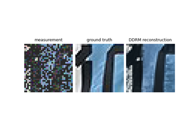

load_url_image
- deepinv.utils.load_url_image(url=None, img_size=None, grayscale=False, resize_mode='crop', device='cpu')[source]
Load an image from a URL and return a torch.Tensor.
- Parameters:
- Returns:
torch.Tensorcontaining the image.
Examples using load_url_image:

Reconstructing an image using the deep image prior.
Reconstructing an image using the deep image prior.


PnP with custom optimization algorithm (Condat-Vu Primal-Dual)
PnP with custom optimization algorithm (Condat-Vu Primal-Dual)


Image reconstruction with a diffusion model
Image reconstruction with a diffusion model


Implementing DiffPIR